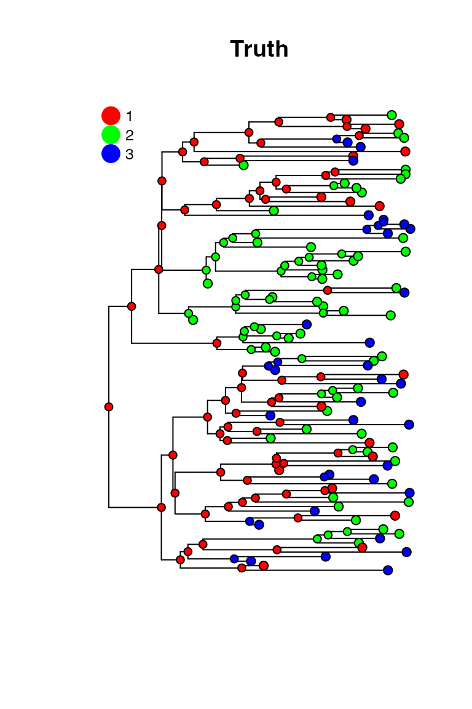
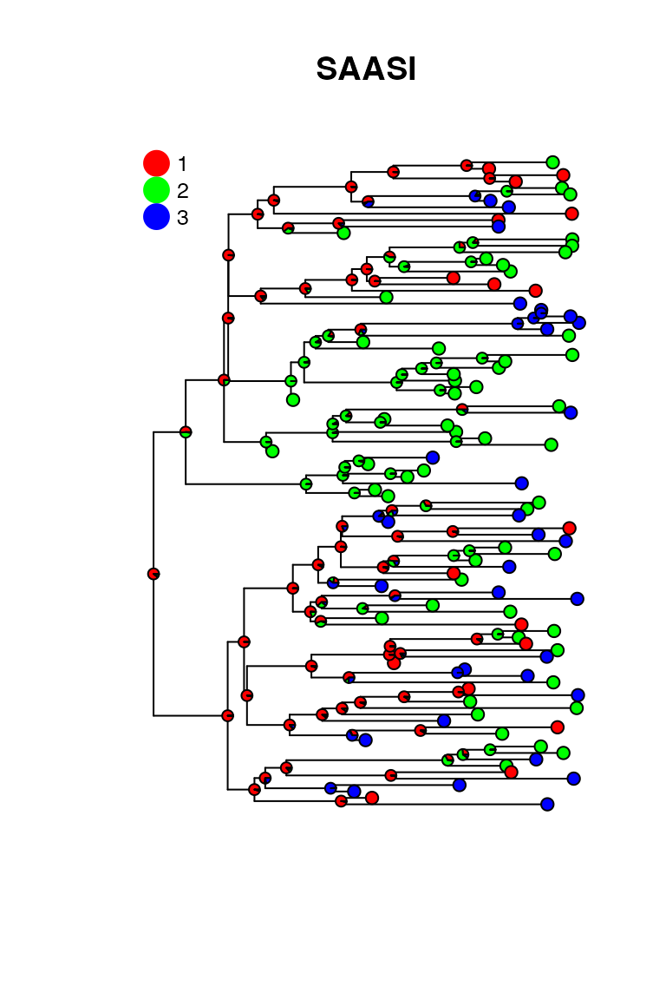
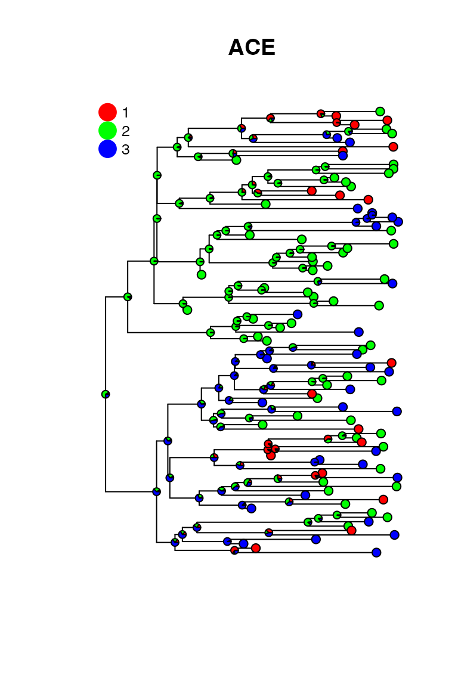

SAASI Simulation Study
2026-02-26
Source:vignettes/saasi_simulation_study.Rmd
saasi_simulation_study.RmdIntroduction
This vignette demonstrates the accuracy of SAASI (Sampling-Aware Ancestral State Inference) through simulation studies. We simulate phylogenetic trees with known ancestral states using a birth-death-sampling process, then assess how well SAASI can recover the internal states.
Simulation Parameters
We use a 3-state model with heterogeneous sampling rates to test SAASI’s ability to handle sampling bias:
# Define birth-death-sampling parameters
demo_pars <- data.frame(
state = c("1", "2", "3"),
rootprior = c(1/3, 1/3, 1/3),
lambda = c(3, 1.5, 1.5), # Birth rate, also varies across states
mu = c(0.1, 0.1, 0.1), # Death rate
psi = c(0.1, 1.0, 1.0) # Sampling rate (heterogeneous!)
)
# Define transition rate matrix Q
demo_Q <- matrix(0.3, 3, 3)
diag(demo_Q) <- -0.6
rownames(demo_Q) <- c("1", "2", "3")
colnames(demo_Q) <- c("1", "2", "3")Key feature: State 1 has a sampling rate of 0.1, while states 2 and 3 have sampling rates of 1.0. This creates sampling bias that SAASI is designed to handle.
Single Simulation Example
First, let’s demonstrate a single simulation to understand the workflow:
set.seed(123)
# Generate tree with built-in post-processing
phy <- sim_bds_tree(
params_df = demo_pars,
q_matrix = demo_Q,
x0 = 1, # Start at state 1
max_taxa = 500, # Initial tree size
max_t = 50, # Maximum time depth
min_tip = 100 # Minimum tips after post-processing
)Extract true ancestral states (ground truth):
# The true internal node states are stored in node.state
true_states <- phy$node.stateRun SAASI to infer ancestral states:
# Run SAASI
saasi_result <- saasi(phy = phy, # phylogenetic tree
Q = demo_Q, # transition rate matrix
pars = demo_pars) Calculate accuracy:
Comparison to ace
In contrast, standard tools are not designed to account for
differences in sampling. Inferring ancestral states with
ace:
ace_result = ace(phy$tip.state, phy, type="d")
ace_predictions = apply(ace_result$lik.anc, 1, which.max)Let’s plot the truth, the ace predictions and the saasi predictions:
true_result = 0*saasi_result
for (k in 1:nrow(true_result)) { true_result[k, true_states[k]] = 1 }
op <- par(mfrow = c(1, 3), mar = c(1, 1, 3, 1), oma = c(0, 0, 0, 0))
on.exit(par(op), add = TRUE)
plot_saasi(phy, true_result, tip_cex = 1, node_cex = 0.6); title("Truth")
plot_saasi(phy, saasi_result, tip_cex = 1, node_cex = 0.6); title("SAASI")
plot_saasi(phy, ace_result$lik.anc, tip_cex = 1, node_cex = 0.6); title("ACE") 


SAASI is much closer to the truth than ace, because it accounts for lower sampling in state 1 (red). The consequence of this lower sampling is that (of course) red tips are less well-represented in the tree than they are in the process that created the tree. Even if the observed tips are in states 2 and 3, the internal nodes giving rise to them might well be in state 1. SAASI correctly estimates many red internal nodes in the top and bottom portions of the tree, whereas ace’s simpler discrete trait phylogeography model does not. This is because SAASI’s likelihood computation accounts for the fact that a clade with a red ancestor is still likely to have quite a few green and blue tips in it, since these are sampled at a higher rate than red tips.